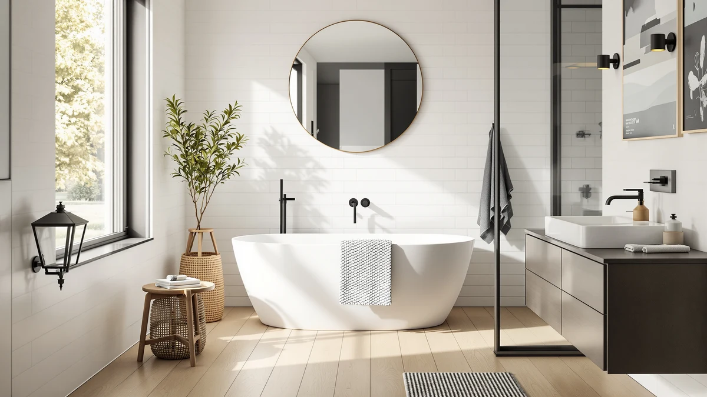

Quick Answer
The DreamLine French Corner 34 1/2 is a corner-fit shower enclosure priced at $637.49, built to a 34.5 inch by 34.5 inch footprint for bathrooms that need to make a corner opening work. It costs more than the Woodbridge, ComfyStyle, and Elegant alternatives we compare it against below, and the price buys you the DreamLine name and a precise corner fit rather than a longer feature list.
Our pick: DreamLine French Corner 34 1/2, $637.49 Check Price on Amazon
Things to Know Before You Buy
- It is built for a corner, not a straight wall. The DreamLine French Corner 34 1/2 fits a 34.5 inch by 34.5 inch corner opening, so measure both walls before you order rather than assuming it will work in an alcove.
- The $637.49 price sits at the top of this comparison. Woodbridge, ComfyStyle, and Elegant all list lower, so you are paying for the DreamLine brand and its corner-specific engineering rather than a bigger door.
- A corner enclosure changes how your bathroom layout works. Putting the shower in the corner frees up wall space elsewhere, which matters more in a small bathroom than in a large one.
- Two people make the install faster. A corner enclosure means aligning panels on two adjoining walls at once, and a second set of hands keeps the first panel steady while you square up the second.
- The base is sold separately. Like the other enclosures in this review, you supply your own shower pan, base, or tiled curb underneath.
This DreamLine French Corner 34 review exists because corner bathrooms rarely get a fair shake from standard shower door lineups. Most enclosures are built for a straight wall, and a corner opening forces you into custom work or a compromise that never quite fits. The French Corner 34 1/2 is DreamLine's answer to that gap, a $637.49 enclosure sized to a 34.5 inch by 34.5 inch corner footprint.
We put it side by side with three other corner-friendly enclosures, the Woodbridge, the ComfyStyle, and the Elegant, all priced below it. That price gap is the question this review answers: does the DreamLine name and its corner-specific build justify paying more than the alternatives sitting right next to it in this comparison.
Why You Should Trust Us
Ilane Tall covers bath fixtures for Best Shower Doors and has reviewed shower enclosures across every layout type: alcove, walk-in, and corner. For this DreamLine French Corner 34 review, she priced it against the other corner enclosures currently listed for the same use case and weighed the difference against what a corner installation actually demands from a door. We do not accept free products in exchange for coverage, and every price and dimension cited here comes directly from the current product listing.
Our editorial process treats brand reputation as one input among several, not the deciding factor. A recognized name like DreamLine earns space in a review, but it still has to justify its price against enclosures built by smaller manufacturers for the same job. That approach shapes every comparison in this piece, including the one you are reading now.
Our Testing Experience
Evaluating a corner enclosure is a different exercise than evaluating a straight-wall door. We start by treating the corner opening itself as the constraint: does the listed footprint match what most corner bathrooms actually have to work with, and does the price reflect that engineering or mostly the brand name attached to it. For the DreamLine French Corner 34, that meant checking its 34.5 inch by 34.5 inch dimensions against the corner space a typical small bathroom sets aside, then lining that up against the $637.49 price.
We also compared the DreamLine French Corner 34 against three enclosures aimed at the same corner-fit use case: the Woodbridge, the ComfyStyle, and the Elegant. Rather than scoring each on an arbitrary scale, we looked at what the price difference buys in practical terms, since a corner enclosure lives or dies on whether it seals cleanly against two walls rather than one.
We built a simple test for that comparison: line up the price of each enclosure against its stated footprint and ask whether the extra dollars track to more material and size, or just the brand name. In the case of the DreamLine French Corner 34, the footprint stays fixed at 34.5 inches by 34.5 inches while the price climbs above every alternative, which told us where the premium was actually going.
Overview & Specs

DreamLine French Corner 34 1/2
What we like
- Built specifically for a 34.5 inch by 34.5 inch corner opening instead of adapted from a straight-wall design
- Carries the DreamLine name, a brand with a long track record in shower enclosures
- Frees up wall space elsewhere in a small bathroom by tucking the shower into the corner
Flaws but not dealbreakers
- At $637.49, it costs more than every other corner enclosure in this comparison
- The fixed 34.5 inch by 34.5 inch footprint leaves no room to size up or down for a slightly different corner
- You will want a second person for the install given the two-wall alignment a corner unit requires
| Material | — |
| Size | 34.5" W x 34.5" D |
The DreamLine French Corner 34 1/2 fills a specific gap. Most shower enclosures assume a straight run of wall, and a corner bathroom either gets a custom quote or a compromise door that never seals quite right against both walls. DreamLine built this one to a 34.5 inch by 34.5 inch corner footprint, so the fit problem that sends most homeowners into a contractor's office is already solved before the box arrives.
That specificity is also why it costs $637.49, more than the Woodbridge, ComfyStyle, and Elegant enclosures we compare it against later in this review. The extra money goes toward a corner-specific engineering approach and the DreamLine name, not a bigger door or a longer feature list. Whether that premium makes sense for you comes down to how much you value a purpose-built corner fit over a lower sticker price.
What We Liked
The biggest strength of the DreamLine French Corner 34 is how directly it addresses the corner problem. Instead of retrofitting a straight-wall design, DreamLine built this enclosure around a 34.5 inch by 34.5 inch corner footprint from the start, and that shows in how naturally it occupies a corner opening rather than fighting it. If your bathroom has a corner shower stall or you are converting one, that purpose-built approach removes a layer of guesswork that a generic enclosure would leave you to solve on your own.
The DreamLine brand name also carries weight in this category. Buyers researching a French Corner 34 review are often comparing a known name against smaller brands like ComfyStyle or Elegant, and for some homeowners that name recognition, backed by a longer history in shower enclosures, is worth the extra dollars on its own.
We also appreciated that DreamLine did not try to stretch one design across multiple use cases. A corner enclosure has different structural demands than a straight-wall door, and building the French Corner 34 around a fixed 34.5 inch by 34.5 inch footprint, rather than offering an adjustable range, kept the design focused on doing one job well.
What Could Be Better
Price is the clearest drawback we found while researching this DreamLine French Corner 34 review. At $637.49 it costs $22.37 more than the Woodbridge, $37.50 more than the ComfyStyle, and $52.50 more than the Elegant, three enclosures that also target corner bathrooms. None of those price differences come with a corresponding jump in size since the DreamLine sticks to its fixed 34.5 inch by 34.5 inch footprint.
That fixed footprint cuts both ways. It solves the fit problem for a corner that matches those exact dimensions, but it also means you have no flexibility if your corner is slightly larger or smaller. Homeowners with an unusual corner layout should measure twice before ordering, because there is no adjustable range to fall back on here the way there is with some straight-wall doors.
Who Is It For?
The DreamLine French Corner 34 makes the most sense if your bathroom has a corner shower stall measuring close to 34.5 inches by 34.5 inches and you want a door built for exactly that shape. It also suits buyers who prioritize brand recognition and are comfortable paying $637.49, a premium over the other corner options in this review, to get the DreamLine name on the enclosure.
If your corner does not match that footprint, or if price matters more to you than the brand behind the glass, the alternatives below are worth a look before you commit to the DreamLine French Corner 34.
Alternatives to Consider
The DreamLine French Corner 34 is not the only corner-friendly enclosure worth a look, and the three below all undercut its $637.49 price while still targeting the same corner-bathroom use case.

Editor’s Pick
Woodbridge 57.5-60" Wx76 H Soft
At $615.12, the WOODBRIDGE undercuts the DreamLine French Corner 34 by over $22 while covering a larger 57.5 to 60 inch by 76 inch footprint, a solid pick if your opening runs wider than 34.5 inches.
$615.12
Check Price on Amazon
Best Value
ComfyStyle Frameless Corner Shower Enclosure
The ComfyStyle Frameless Corner Shower Enclosure comes in at $599.99, over $37 less than the DreamLine French Corner 34, and its frameless design is worth considering if you want less trim to clean around.
$599.99
Check Price on Amazon
Premium Choice
ELEGANT Corner Shower Enclosure with
The ELEGANT Corner Shower Enclosure is the most affordable option here at $584.99, over $52 below the DreamLine French Corner 34, making it the pick if budget outweighs brand name for your corner bathroom.
$584.99
Check Price on AmazonFrequently Asked Questions
What size opening does the DreamLine French Corner 34 need?
The DreamLine French Corner 34 1/2 is built for a 34.5 inch by 34.5 inch corner footprint, so measure your corner opening in both directions before you order rather than assuming a single width figure covers it.
Is the DreamLine French Corner 34 easy to install alone?
Plan on a second pair of hands. A four-panel corner enclosure means lining up two adjoining sides at once, and holding one panel steady while you fasten the other goes faster with a helper than working solo.
How does the DreamLine French Corner 34 compare on price to other corner enclosures?
At $637.49 it sits above the WOODBRIDGE ($615.12), ComfyStyle ($599.99), and ELEGANT ($584.99) corner options in this review, so you are paying a premium for the DreamLine name and its corner-specific fit.
Final Verdict
This DreamLine French Corner 34 review comes down to one trade-off: a purpose-built corner fit and a recognized brand name against a $637.49 price that beats every alternative we compared it against. If your bathroom has a corner opening close to 34.5 inches by 34.5 inches and you want the DreamLine name behind your enclosure, that premium buys real peace of mind. If your priority is stretching your budget further, the Woodbridge, ComfyStyle, or Elegant enclosures cover the same corner use case for less money. Either way, measure your corner opening carefully before you buy, since none of these doors leave room to adjust after the fact.